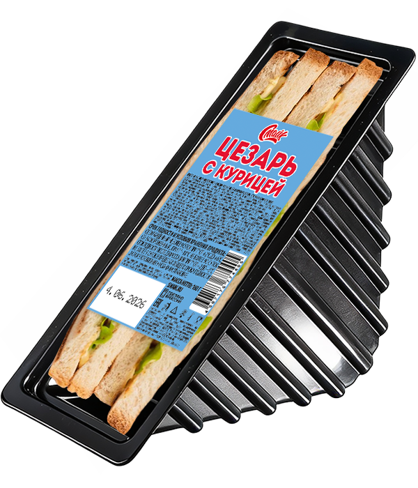

Сэндвич с курицей и соусом Цезарь

Состав:
тостовый хлеб, филе куриное, соус "Цезарь", сыр.
Масса нетто:
160 г.
Пищевая и энергетическая ценность в 100 г продукта (средние значения):
Белки
– 12,9 г.
Жиры
– 20,0 г.
Углеводы
– 11,0 г.
Калорийность
– 335 ккал / 1400 кДж.
Закрыть окно